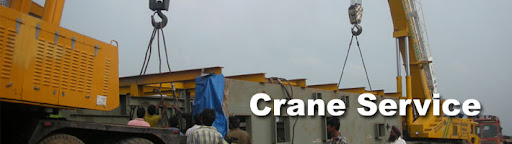

Crane Service
We offer a massive fleet of cranes (up to 150 tons) for operated to ensure that all of our customer’s needs are met. Leading developers and contractors know that Pilania delivers the right equipment on time, a wealth of experience and total commitment to the success of every project. Our fleet includes boom trucks, telescopic forklifts, rough terrain cranes, all terrain cranes, conventional and hydraulic truck cranes, conventional crawler cranes and now both fixed and portable tower cranes. That's why Pilania offers state of the art cranes. Pilania is committed to quality services that meet our customer requirements, expectations and demands in accordance with Contractual requirements.
Our Service division specializes in the crane industry and is also well versed and experienced in hauling other large components including wind farm equipment, heavy construction equipment, concrete cell phone equipment buildings, railroad track repair equipment and federal oversized equipment. Crane Service Machinery Moving Division specializes in moving large items including, but not limited to medical equipment, machine shop equipment, transformers and generators, sculptures and flight simulators. We have a variety of used cranes.
Key Advantages
- Effective deployment of Cranes at optimal rates.
- Efficiency in operations
- Low mobilization rates and time
- Provides heavy lift, plant erection and maintenance services to all large scale projects.